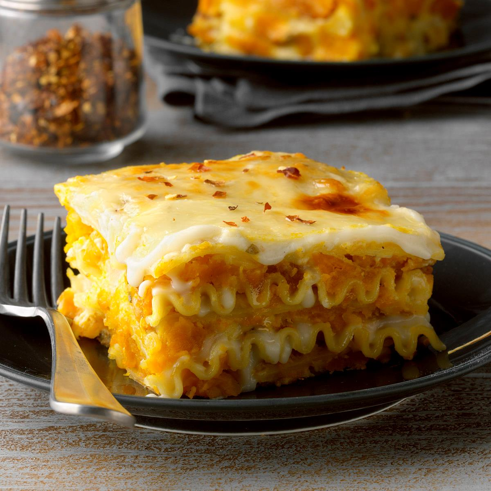

Pumpkin Lasagna

I was inspired to create my own pumpkin lasagna by combinding two recipes I found online. The result was well worth the effort!
Ingredients
- 1 tablespoon minced fresh sage
- 2 teaspoons salt
- 1 teaspoon ground black pepper
- 2 tablespoons olive oil
- 1 1/2 pounds sliced baby bella mushrooms
- 1 large onion, diced
- 2 gloves garlic, minced
- 3 cups pumpkin puree
- 12 lasagna noodles
- 1 cup ricotta cheese
- 1 cup shredded mozzarella cheese
- 2 tablespoons butter
Steps
- Preheat oven to 400 degrees F (200 degrees C).
- Mix sage, salt, black pepper and 1/2 teaspoon cloves together in a small bowl to make a spice blend.
- Heat olive oil in a large skillet over medium-high heat. Add mushrooms, onion, garlic, and 1/2 of the spice blend; cook and stur until mushrooms are tender and all moisture has evaporated, about 5 minutes.
- Combine 2 cups pumpkin piree, 1/2 cp parmesan cheese and remaining spice blend in a bowl.
- Grease a 9x13-inch baking pan with cooking spray. Arrange 4 lasagna noodles in the bottom so they slightly overlap. Cover with 1/2 of the pumpkin mixture and 1/2 of the mushroom mixture. Dot with 1/2 cup ricotta; sprinkle 1/2 cup mozarella cheese on top.
Repeat layers once more. Place remaining 4 noodles on top.
- Bake in the preheated oven for 20 miutes. Uncover and bake untill bubbly, about 15 minutes more.